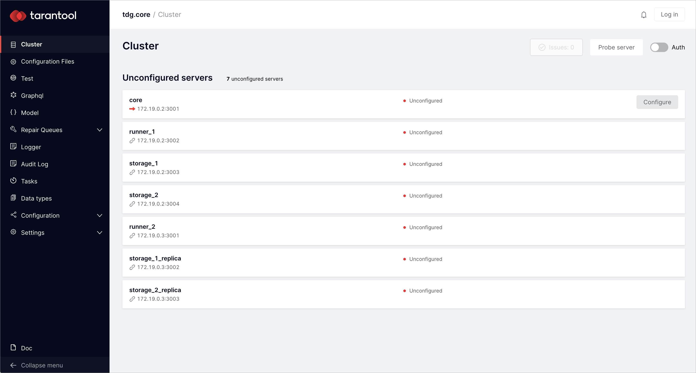
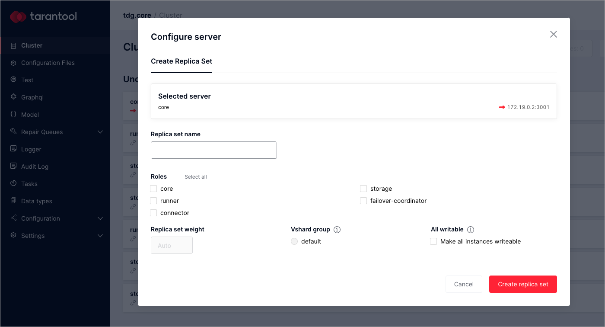

First deployment with Ansible¶
This guide explains how to deploy Tarantool Data Grid (TDG) for the first time using Ansible. It offers an option of TDG deployment on two virtual machines with a pre-defined configuration.
Getting a TGZ file for deployment¶
To deploy Tarantool Data Grid, you need an RPM (.rpm), TGZ (tar.gz), or Docker image (docker-image.tar.gz) file.
For deployment with Ansible, you can only use either an RPM or a TGZ file.
For now, a TGZ file will do just fine.
It is easier to deploy and does not require root access.
Download a TGZ file of the latest version at the customer zone of tarantool.io.
Make sure your browser did not unarchive the downloaded file: the file extension should be tar.gz.
If you do not have access to the customer zone, you can get one by applying this form or writing to sales@tarantool.io.
Setting up virtual machines¶
For TDG deployment, you need to bring up two virtual machines with Linux OS (CentOS 7/RHEL 7 are preferable) and SSH access. If you already have them, just skip this topic. If you don’t have virtual machines, then follow these instructions.
Install VirtualBox to run virtual machines and Vagrant to automate the configuration process. Vagrant will prepare the configuration of two virtual machines with additional scripts for TDG to deploy.
Make sure you have VBoxManage in your $PATH environment variable.
Check with the command:
$ which VBoxManage
In the downloaded TGZ file, there is a directory called deploy.
There you’ll find Vagrantfile, which automates the creation of a test environment for cluster deployment.
Open the terminal, unpack the tar.gz archive, go to the deploy directory, and run virtual machines:
tar xzf tdg-<VERSION>.tar.gz # change <VERSION> for the TDG version you've downloaded
cd tdg2/deploy
vagrant up
This command will bring up two virtual machines with CentOS 7 and passwordless SSH access for user vagrant.
IP addresses of those machines are: 172.19.0.2 and 172.19.0.3.
Deploying the cluster¶
Preparing¶
After you’ve created virtual machines, install locally Ansible and Tarantool Cartridge Ansible role (the latest 1.x version). If Ansible role version 2.x is available, you can choose it instead, but you may face some challenges.
Here is one of the ways to install Ansible and Ansible role:
pip install ansible~=4.1.0 # version 4.1 or later, but not version 5.x
ansible-galaxy install tarantool.cartridge,1.10.0
Configuring¶
In the deploy directory, there is the hosts.yml file.
It contains cluster configuration.
Open it to set cluster cookie and path to package:
all
vars:
# cartridge_package_path: "../../packages/tdg-ENTER-VERSION-HERE.tgz" # path relative to playbook
# cartridge_cluster_cookie: "ENTER-SECRET-COOKIE-HERE" # change for "secret-cookie"
Delete # to uncomment these lines, enter the TDG version that you’ve downloaded, and specify the path to the TGZ file. Also, set a cluster cookie which should be a unique string. For this tutorial, just “secret-cookie” will do.
Here is an example:
all
vars:
cartridge_package_path: "../tdg-2.0.0-1132-g2358e716.tgz"
cartridge_cluster_cookie: "secret-cookie"
If you need to, you can always edit this file to change cluster configuration. Here is some info about file sections:
all.varfor common variablesall.children.tdg_group.hostsfor instances parametersall.children.tdg_group.childrento specify parameters for a group of instances:- to group the instances by the host, set their
ansible_hostparameter - to group the instances by replica set, set their
replicaset_alias,roles,failover_priorityparameters, and so on.
- to group the instances by the host, set their
You can find more information about parameters in Tarantool Cartridge Ansible role documentation.
Deploying¶
In the deploy directory, there are Ansible playbooks
that will help you finish the deployment.
There are two options of TDG deployment with the given playbooks:
- Deploying a TDG cluster with completely configured topology.
- Deploying a TDG cluster with a list of unconfigured instances.
For a complete TDG deployment with topology, run this command:
$ ansible-playbook -i hosts.yml playbooks/deploy.yml
If you want to practice configuring the topology of the cluster via the web interface, run the playbook to deploy only instances:
$ ansible-playbook -i hosts.yml playbooks/deploy_without_topology.yml
Now you can open http://172.19.0.2:8081 in your web browser to see the cluster web interface. This is what you’ll see if you chose to deploy without topology:
Managing the cluster¶
Configuring topology of the cluster¶
If you have deployed instances with topology, skip this topic.
If you have deployed instances without topology, you can now edit topology by creating replica sets and specifying their parameters in the web interface:
On the Cluster tab, there is a set of unconfigured instances. Select the core instance with the
172.19.0.2:3001URL and click Configure. You will get the Configure server dialog:In the Configure server dialog, specify two replica set parameters: replica set name and role.
For the core instance, give the replica set name “core” and select the “core” role. After you’ve set the parameters, click Create replica set.
Set the same parameters for the rest of the unconfigured instances as follows:
Instance URL Replica set name Roles 172.19.0.2:3002 runner_1 runner, connector, failover-coordinator 172.19.0.2:3003 storage_1 storage 172.19.0.2:3004 storage_2 storage 172.19.0.3:3001 runner_2 runner, connector There are two instances left to configure, storage_1_replica with the
172.19.0.3:3002URL and storage_2_replica with the172.19.0.3:3003URL.Join them to the already existing replica sets with storage roles:
- Select storage_1_replica and click Configure.
- In the Configure server dialog, switch to the tab called Join Replica Set.
- Check storage_1 and click Join replica set.
For storage_2_replica, repeat the same steps, but check storage_2 instead.
After assigning all roles, enable storage replica sets by clicking “Bootstrap vshard”.
It initializes Tarantool vshard module.
You can read more about this module in Tarantool documentation.
You’ve created virtual buckets that are allocated to storages according to the number of instances with the storage role.
Starting or stopping instances¶
This step is optional.
In the deploy directory, there are also playbooks that start or stop the instances.
You can stop and disable all instances by stop.yml playbook:
$ ansible-playbook -i hosts.yml playbooks/stop.yml
You can start and enable all instances by start.yml playbook:
$ ansible-playbook -i hosts.yml playbooks/start.yml